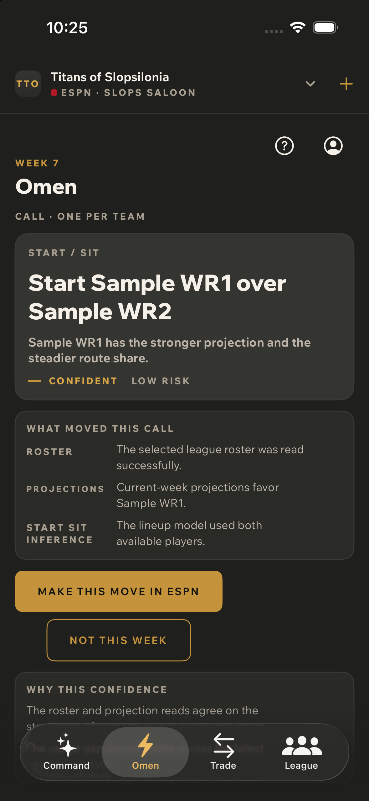
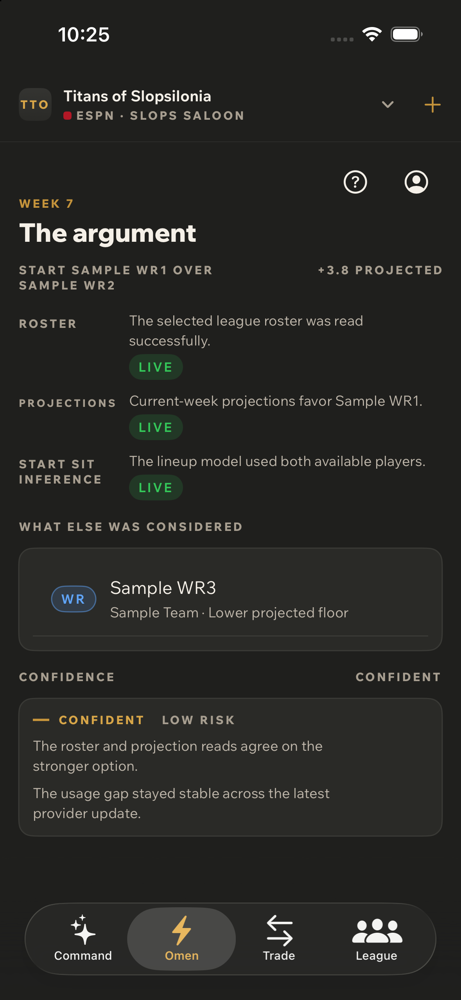
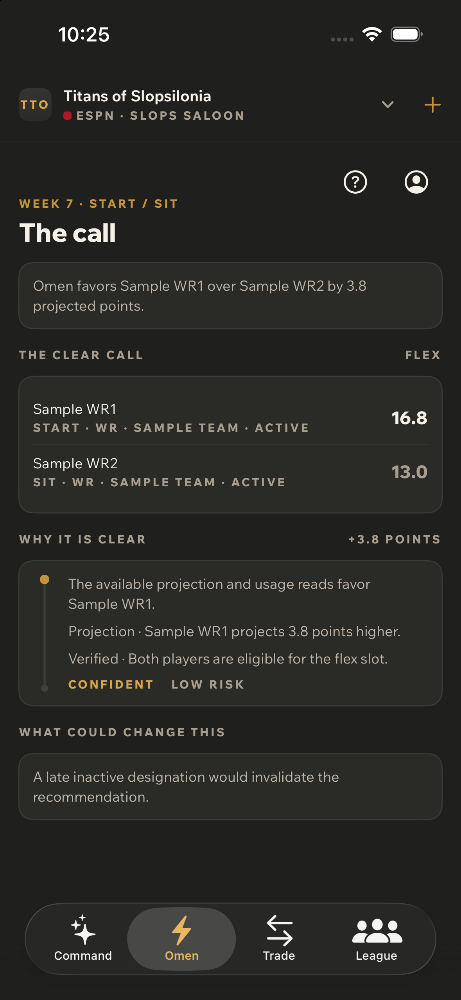
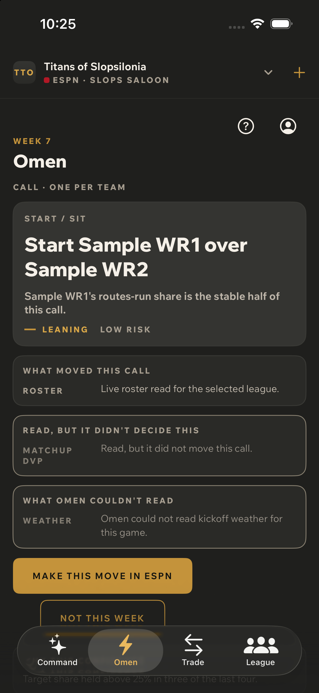
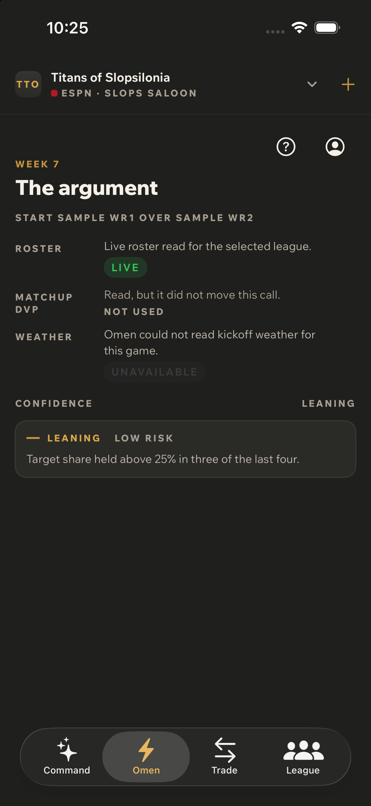
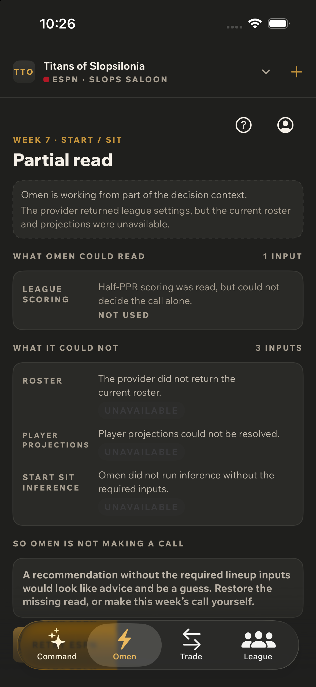

Ordered journey captures, iOS, dark, iPhone 16, one run per pass.
Storyboard order, not screen ids. Proves composition, sequence and tone — not navigation.
Nominal pass
Everything resolved, everything worked. This is the condition the product is least often in, which is why it is not captured alone.

1 · Omen callThe week's one call, with its facts row and the route into the argument.

2 · The argumentEvery input live and used. Capabilities render as a key, a sentence and a status word — no glyphs.

3 · The callClear decision. The route returns a comparison pair, not a nine-player lineup, so the screen does not claim one.
Degraded pass
At least one input unavailable and at least one live, used: false, per capability-expression-v1. This is the pass where the screens' honesty is visible at all.

1 · Omen callLeaning rather than Confident, with the thinner evidence behind it.

2 · The argumentAll three renderable classes at once: Roster live/used, Matchup DvP read, not used, Weather unavailable and named. not_requested renders as nothing.

3 · Partial readOmen declines to make a call and says why, rather than inventing advice from a partial read.